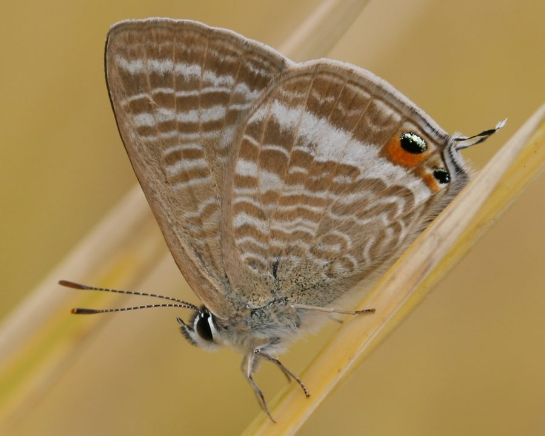

पी ब्लू तितलीPea Blue
Lampides boeticus · Lycaenidae · INS-0076

- Scientific name
- Lampides boeticus (Linnaeus, 1767)
- Family
- Lycaenidae
- Hindi
- पी ब्लू तितली
- Local names
- pea blue, long-tailed blue, matar ki titli, neeli chhoti titli
- Status here
- native
- Movement
- Resident, here all year
- IUCN
- not evaluated
- Review
- audited and independently read
When to look कब देखें
Present all year.
Uses and possibilities उपयोग और संभावनाएँ
Drawn from the documented uses in the profile below, where each is labelled traditional, current or a research lead. All uses →
नीली तितली / Pea Blue
Lampides boeticus (Linnaeus, 1767) — Lycaenidae
नीली तितली (लॉंग-टेल्ड ब्लू) — पूर्वी उत्तर प्रदेश की मूँग, मसूर, और अन्य फलीदार (legume) पौधों के खेतों में पाई जाने वाली एक छोटी और सुंदर नीली तितली है। नर की ऊपरी तरफ़ के पंख चमकीले नीले होते हैं, जबकि मादा का रंग भूरा-नीला होता है। इसके पंखों की पूँछ पर लंबे काले धागे जैसी रचना होती है जो इसे "लॉंग-टेल्ड" (long-tailed) का नाम देती है। ये धागे शिकारियों का ध्यान सिर से हटाकर पूँछ की ओर आकर्षित करते हैं। यह तितली फलीदार पौधों की बहु-पीढ़ी (multivoltine) प्रजाति है और पूरे साल पाई जाती है।
Quick Identification त्वरित पहचान
| Feature | Description |
|---|---|
| Size | Small butterfly; body length 14–18 mm; wingspan 28–36 mm |
| Male (Dorsal) | Bright metallic blue upper wings with narrow black border; brilliant coloration |
| Female (Dorsal) | Duller, dark grey-brown upper wings with blue basal patches |
| Tail | Distinctive long, thin tail-like extensions on hindwing (2–5 mm), with black tips |
| Underparts | Pale greyish-white with numerous tiny black spots arranged in lines |
| Eyespot | Orange or red spot near the tail base, resembling an eye (tail-eye mimicry) |
Field tip: Look for tiny bright blue butterflies with distinctive long tails on their hindwings, fluttering around pea and bean plants. The long tail and bright blue coloration readily identify the Pea Blue.
Morphology आकारिकी
Biometrics (typical measurements for adults in northern Indian plains):
| Measurement | Range |
|---|---|
| Body length | 14–18 mm |
| Wingspan | 28–36 mm |
| Forewing length | 13–16 mm |
| Tail length | 2–5 mm |
Body: Very small, slender, dark brown or black.
Wings:
- Dorsal (upper) surface: Males have brilliant, iridescent metallic blue wings with a narrow black border. Females are duller, with dark grey-brown coloration and blue basal areas on the wings.
- Ventral (lower) surface: Pale greyish-white or cream, heavily marked with numerous small black spots arranged in lines and bands.
Special features: The hindwing has distinctive long, thin tail-like lobes (caudal appendages), each tipped with a black dot. Near the base of each tail is an orange or red eyespot, a classic example of tail-eye mimicry, which deflects predator attacks away from the vital head and body regions.
Sexual Dimorphism: Males are brightly colored with brilliant metallic blue; females are much duller and slightly larger.
Behaviour & Ecology व्यवहार और पारिस्थितिकी
Tiny legume specialist with tail-eye deflection. The Pea Blue is a small, weak flyer that specializes on legume crops. The long tails and eyespots are brilliant examples of predator deflection: when a predator attacks the tail region, the butterfly may lose the tail and escape, while the attacker's mouth is occupied with non-vital wing tissue. Males perch on host plants and rapidly dart up to investigate passing insects. The species produces many generations per year and is highly abundant in pulse-growing regions.
Legume specialist. The caterpillar is a generalist on legume crops and wild legumes (Pea, beans, lentils, clover), making this butterfly particularly important in agricultural areas.
Life Cycle / Phenology जीवन चक्र
| Stage / Season | Event |
|---|---|
| Egg | Laid singly on legume flowers or developing pods; pale yellow; hatch in 3–4 days |
| Larval (Caterpillar) | 4–5 instars; mature caterpillar 12–15 mm long; green with darker stripes; development 10–15 days |
| Pupa | Attached chrysalis; green or brown; emerges in 6–10 days |
| Adult | Produces 5–6 generations per year; year-round presence; lifespan 2–3 weeks |
Host Plants or Prey आहार
Larval host plants:
- Pea (Pea), mung bean (Vigna radiata), lentil (Lens culinaris), chickpea (Cicer arietinum), clover (Trifolium species), and other wild and cultivated legumes (Fabaceae).
Adult nectar sources:
- Legume flowers themselves, small wildflowers, and various herb flowers.
Predators / Natural Enemies शत्रु
- Birds: Small insectivorous birds and dragonflies prey on them; the tails serve as deflection devices.
- Spiders: Tiny jumping spiders and web spiders.
- Parasitoid Wasps: Minute chalcid wasps parasitize caterpillars and pupae.
- Predatory insects: Robber flies and antlions.
Agricultural / Human Relevance कृषि प्रासंगिकता
Legume crop indicator. The Pea Blue is an excellent indicator of thriving legume crops and their health.
Minor pest. In some years, caterpillars can cause minor damage to pea and bean pods, but generally cause no significant economic loss. The damage is offset by the pollination services of the adults.
Pollinator. Despite their small size, Pea Blues are efficient pollinators of legume flowers, aiding in pod set and seed production.
Expected Locally स्थानीय रूप से अपेक्षित
Not a field record. Written from published accounts for eastern Uttar Pradesh. No confirmed local sighting yet — if you have seen it, that is what the atlas needs.
अभी तक स्थानीय पुष्टि नहीं। यह विवरण प्रकाशित स्रोतों से है, किसी अवलोकन से नहीं।
To be expected in Basti district year-round in pea (matar), mung bean (moong), and lentil (masoor) fields. Look for tiny bright blue butterflies with distinctive long tails and red eyespots fluttering around legume plants. Check flower buds and pods for tiny green caterpillars. The first local record would be a photograph with place and date; send it to the atlas contact on the About page.
Distribution वितरण
Global range: Widespread across the Old World, from Africa and Europe through Asia to Australia and recently introduced to North America.
In India: Distributed throughout the country, from sea coast to 2,500 metres in the hills.
In Uttar Pradesh: Abundant resident in all agricultural districts, particularly in pulse-growing areas.
In Basti district / eastern UP: Expected year-round in all legume-growing areas.
Research Questions शोध प्रश्न
Anyone can investigate these | कोई भी इन प्रश्नों की जाँच कर सकता है
- Which legume crops in Basti support the most Pea Blue caterpillars? — Survey caterpillar abundance on different legume crops.
- How many generations of Pea Blue are produced in Basti in one year? / बस्ती में पीली तितली के एक साल में कितनी पीढ़ियाँ होती हैं? — Track emergence peaks throughout the year.
- Do predators actually attack the tail region more frequently than the body region in Pea Blue butterflies? — Observe and count tail-bitten vs. body-bitten specimens in the field.
- Does tail loss reduce flight ability or mate-finding success? — Capture, mark, and monitor tailed vs. tail-less individuals.
- What is the ratio of males to females visiting legume flowers in May? — Conduct timed observations on flowering legume plots.
Similar Species मिलती-जुलती प्रजातियाँ
| Species | How to tell apart | हिंदी |
|---|---|---|
| Large Grass-blue (Pseudozizeeria maha) | Smaller; lacks the long tails; brown coloration in females | घास-नीली — छोटी, पूँछ नहीं |
| Pointed Grass-blue (Zizeeria karsandra) | Smaller; different tail structure; smaller eyespots | नुकीली घास-नीली — छोटी |
Field rule: Tiny bright blue butterfly with distinctive long, thin tails tipped with black dots and orange eyespots on the hindwing, found on legume crops, is the Pea Blue.
Taxonomy & Classification वर्गीकरण
Original description. Linnaeus described the Pea Blue as Papilio boeticus in 1767 in the 12th edition of Systema Naturae. The type locality is Europe. The genus Lampides was later established to contain this highly successful and widespread legume-feeding species.
Subspecies. Multiple subspecies are recognized globally. The Indian subspecies is L. b. boeticus.
Family and order placement. Order Lepidoptera, family Lycaenidae, subfamily Polyommatinae.
Phylogenetic notes. Lampides is a monotypic genus distributed widely across the Old World. It represents an evolutionary success story of legume-feeding specialization.
IUCN status rationale. Not evaluated. Extremely common and widespread, under no conservation threat.
Photo Gallery फोटो गैलरी
No photos yet — add field photos to media/species/pea_blue/ and run node scripts/sync_photos.js.
Photos needed आवश्यक फोटो
- [ ] Adult male on pea flower (मटर के फूल पर)
- [ ] Adult showing tail details (पूँछ का विस्तार)
- [ ] Caterpillar on pod (फली पर)
References संदर्भ
- Linnaeus, C. (1767). Systema Naturae per regna tria naturae, 12th ed. Holmiae.
- Bingham, C.T. (1907). The Fauna of British India, including Ceylon and Burma. Butterflies. Vol. 2. Taylor & Francis, London.
- Kehimkar, I. (2008). The Book of Indian Butterflies. Bombay Natural History Society, Mumbai.
- Kunte, K. (2000). Butterflies of Peninsular India. Universities Press, Hyderabad.
- Zoological Survey of India (2010). Fauna of Eastern Uttar Pradesh.
- GBIF Occurrence Data — Lampides boeticus, Uttar Pradesh (2010–2025).
Source file: species/fauna/insects/pea_blue.md